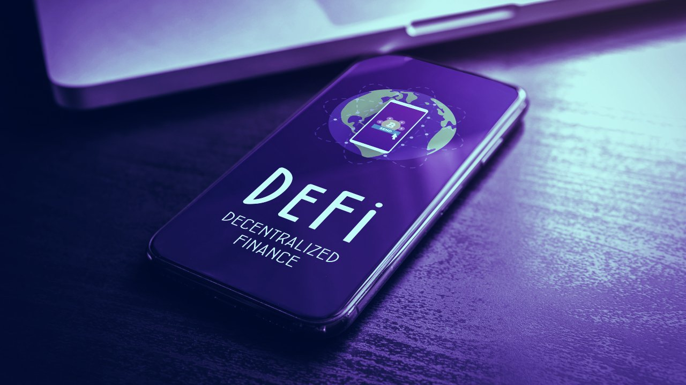

Mercado descentralizado
Las DeFi o Decentralized Finance (Finanzas Descentralizadas, en español) es el nombre que está definiendo una gran tendencia que se está dando entorno a la tecnología blockchain en los últimos años.
DeFi busca desarrollar pequeñas piezas financieras tradicionales pero con un grado extra de transparencia y descentralización. Estas pequeñas piezas, como si fueran piezas de Lego, son combinables entre sí, con el fin de desarrollar todo un ecosistema de pequeñas soluciones que en su conjunto formen una gran solución para las finanzas que invaliden la necesidad de instituciones financieras financieras centralizadas y opacas que ya no aportan valor.
Esa es la idea que ha impulsado la creación del término “DeFi”, y la que ha llevado su evolución hasta el punto actual. De hecho, en la actualidad es imposible pasar por alto el altísimo impacto que DeFi tiene en el mundo cripto. Por esa razón, abrimos un espacio para conocer que es DeFi y como está idea está cambiando el mundo financiero global.
DeFi, la idea que está cambiando el mundo financiero
Imagina un mundo donde cualquier persona pudiera crear productos financieros transparentes, justos y eficientes, haciendo que los bancos, las grandes financieras, prestamistas y empresas de seguros pasen a un segundo plano, o mejor aún, se vuelvan completamente innecesarias y desaparezcan. Pero también un mundo donde cualquier persona pueda interactuar con esos productos de forma libre.
Pues bien, esto es lo que es DeFi. Es decir, quiere convertir las estructuras de finanzas centralizadas que tenemos ahora, en estructuras descentralizadas, sin terceros de confianza, ejecutada sobre smart contracts o contratos inteligentes, dentro de una blockchain donde quede reflejado de forma transparente un registro escrito e inalterable de cada acción realizada.
El impacto de una tendencia como esta es gigantesco. Apenas estamos en sus primeros años y ya la creatividad de la comunidad mundial está dando forma a versiones alternativas de casi todos los productos financieros ya existentes.
Imagina que tienes la necesidad de obtener un crédito para emprender. En lugar de ir a un banco, puedes ir a una plataforma DeFi y solicitar un préstamo. Dicho préstamo tiene unas condiciones (salvando los tecnicismos) bastante claras y transparentes. Todo esto gracias a que dicho préstamo va a ser controlado por un smart contract público e inmutable.
No solo eso, todas las acciones que se realicen en la plataformas quedan visibles y grabadas de forma inmutable también en la blockchain. Tal vez usted no tiene el conocimiento para verificar la fiabilidad del servicio DeFi, pero debido a su característica de transparencia, miles de ojos podrán analizarlo y cuestionarlo, alertando de su mal funcionamiento si así fuera. Y en el futuro, dado el impacto de esta tecnología, seguro que en la escuela se enseña a los niños a leer smart contracts transparentes.
Gracias a DeFi, no necesitará estar bancarizado, no necesitará llevar decenas de papeles, hacer filas para entregarlos y esperar semanas para una respuesta. En su lugar, desde la comodidad de su sofá, con su smartphone podrá hacer todo el proceso recibiendo el dinero en su poder.
No obstante, las DeFi pueden ser mucho más, pueden ser el vehículo para la economía y las finanzas de ese mundo cada vez más presente que con la ayuda de la tecnología Blockchain comience a descentralizarse. El vehículo que abra las puertas a inversiones internacionales sin tanta burocracia, costes y tiempo y con mayores niveles de confianza y transparencia. Un vehículo para que las personas no bancarizadas puedan acceder a servicios sin las dictaduras de los bancos, teniendo iguales condiciones de evolucionar personalmente en su desarrollo.
Características de las DeFi
Ahora que ya que conocemos el concepto, sus orígenes y la diferencias entre modelos financieros digitales, conozcamos cuales son las características de las DeFi.
-
Funcionan en base a la tecnología blockchain y de los smart contracts.
-
Son muy seguras. Esto gracias a que usan técnicas criptográficas potentes para asegurar que la plataforma, el acceso y uso de las mismas pueda ser realizado solo por personas autorizadas.
-
Cuentan con altos niveles de descentralización. El mayor potencial de las DeFi es su alto nivel de descentralización. Es decir, tienen la capacidad de actuar sin necesidad que una cadena burocrática se imponga por encima de las funciones de la plataforma.
-
Sin confianza en terceros. Esto significa que la actuación en una plataforma es directa entre el usuario y la plataforma en sí. Los terceros de confianza son innecesarios porque esa tarea será realizada por la blockchain. Es esta estructura la que llevará el registro de todo de forma segura e inmutable.
-
Transparentes. Otra gran características de las DeFi es su transparencia. Al ser construidas sobre software libre cada línea de código de las plataformas es auditable. Además las movilizaciones de recursos son auditables, porque todas ellas tienen lugar sobre la blockchain.
-
Sin fronteras. El acceso a una plataforma DeFi no tiene fronteras. Puedes estar en cualquier país del mundo y acceder a sus servicios sin inconvenientes.